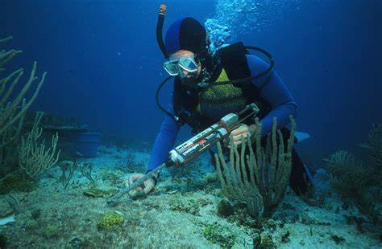
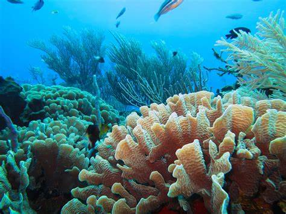
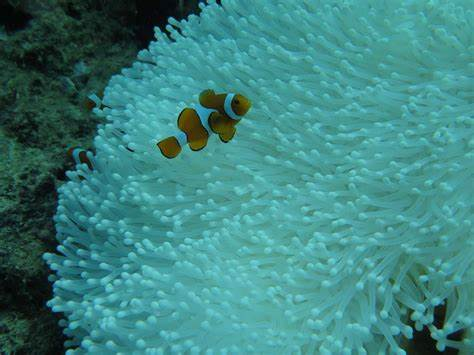
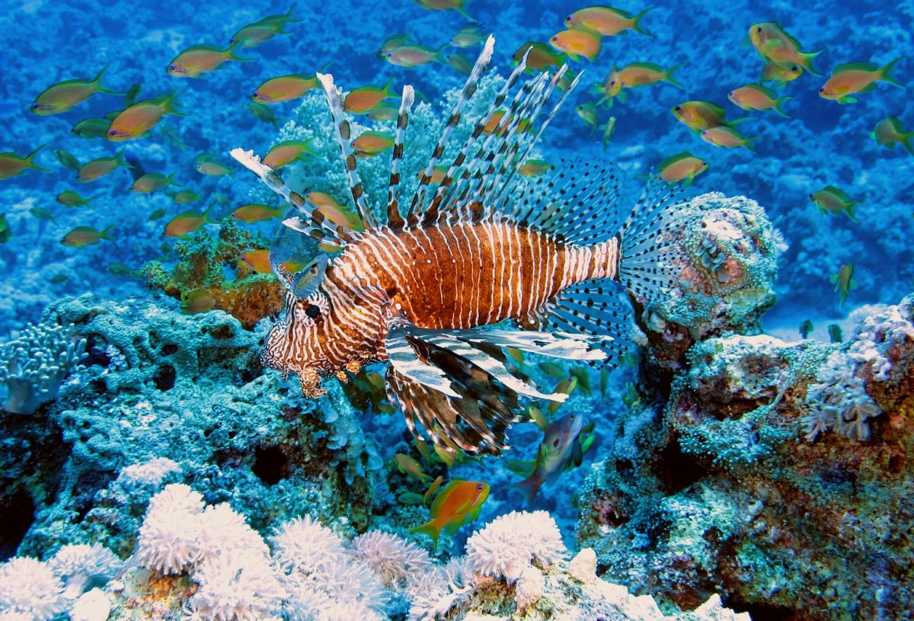

Coral Reefs
And why we should protect them
What are coral reefs?
Coral reefs are diverse underwater ecosystems
that are formed by colonies of tiny animals called
coral polyps. These polyps secrete a hard calcium
carbonate exoskeleton that builds up over time to form
the distinctive structures of coral reefs. Coral reefs
are found in tropical and subtropical waters around the
world and provide important habitats for a vast array of
marine life, including fish, mollusks, and crustaceans.
They also offer many benefits to humans, such as providing
a source of food, income from tourism, and protection from
coastal erosion. However, coral reefs are threatened by a
range of human activities, including climate change,
overfishing, pollution, and physical damage from anchors
and other recreational activities.
Why their protection is important
- Biodiversity hotspot: Coral reefs are among the most
diverse ecosystems on Earth, providing a home to a vast
array of marine species. They are often referred to as
the "rainforests of the sea" due to their incredible
biodiversity. Protecting coral reefs ensures the
preservation of countless species, including fish,
crustaceans, mollusks, and various forms of marine
life that depend on these habitats for survival.
- Ecosystem services: Coral reefs provide numerous
valuable ecosystem services that benefit both marine
life and humans. They act as natural barriers,
protecting coastlines from erosion, storms, and waves.
Reefs also support local economies through tourism, fishing,
and pharmaceutical research. Additionally, coral reefs are
essential for maintaining the health and productivity of
adjacent marine ecosystems, such as seagrass beds and
mangrove forests.
- Climate regulation and carbon storage: Coral reefs
play a crucial role in mitigating climate change.
They act as carbon sinks, absorbing and storing vast
amounts of carbon dioxide from the atmosphere.
By protecting coral reefs, we help maintain this vital
carbon storage capacity. Moreover, healthy coral reefs
are more resilient to the impacts of climate change,
such as ocean acidification and rising sea temperatures,
which threaten their survival. Preserving coral reefs
contributes to overall climate regulation and aids in
the adaptation of marine life to changing environmental
conditions.
In summary, protecting coral reefs is vital
for preserving biodiversity, maintaining essential
ecosystem services, and mitigating climate change.
By safeguarding these fragile ecosystems, we ensure
the survival of numerous species, protect coastlines,
support local economies, and contribute to global
efforts in combating climate change.



